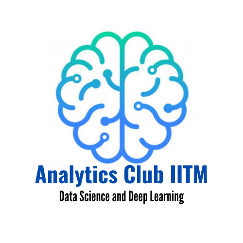

Who are we?
Ever heard of AI beating grandmasters at chess? Wondered how chatbots and virtual assistants work? The Analytics Club, CFI is a community of passionate students working in the field of AI.
At Analytics Club, we apply these techniques to tackle challenging problems in diverse fields like Data Science, Computer Vision, NLP, Reinforcement Learning and more!
Projects hosted by the club for the year 2022-23
- AI4AR: Text Guided Object Hallucination
- AI on Edge: Efficient Visual Question Answering
- Chitti: Reinforcement Learning for Virtual Home Tasks
- CleanTheLiDAR: Point Cloud De-noising
- [SIP]: Project Pingala: Speech Synthesis for Sanskrit Verse
All the above mentioned projects are OPEN FOR ALL and we DO NOT expect any pre-requisites to apply for them.
The selection proceedure would involve a small task (related to the project itself) followed by an interview upon successful submission of the task.
We will be providing a detailed-guide for each task suggesting pointers on how to proceed to solve it.
The selection proceedure is mainly to gauge your motivation, capacity to learn rather than your existing technical skills.
Announcements
-
[27 April 2022 20:30:00 PM IST] - Project Applications are now released!.
-
[26 April 2022 12:15:00 AM IST] - Projects statements are out now! Project Applications will be out soon!.
-
[26 April 2022 12:00:00 AM IST] - Coordinator Applications are released and can be found here!! The submission deadline is 11:59 PM, 9th May 2022.